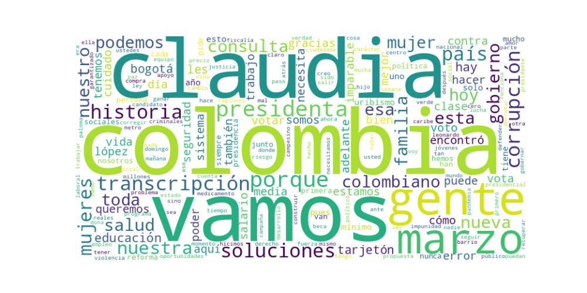

Seguidores: 1,004,675
1. Perfil de Comunicación: Claudia López emplea un estilo de comunicación directo, cercano y con un lenguaje accesible, propio de las redes sociales. Combina un tono informal y coloquial (uso de términos como "berraca", "chévere", "gay bacán") con momentos de firmeza y contundencia política, especialmente al dirigirse a adversarios. Es una comunicación de alta emotividad, que busca crear identificación desde la experiencia personal ("hecha a pulso", "clase media") y el desempeño en cargos públicos. Utiliza un lenguaje popular antes que técnico, facilitando la conexión con un público amplio, aunque no renuncia a presentar propuestas programáticas estructuradas.
2. Temas Principales: * Salud: Es el tema más recurrente y de mayor carga emocional. Lo aborda desde la crítica frontal a la gestión actual ("destruyeron el sistema"), denunciando casos concretos (Kevin, doña Cecilia) y proponiendo soluciones como saldar deudas de medicamentos, crear un sistema de información para auditorías y descentralizar la entrega de medicamentos a través de droguerías de barrio. Ejemplo: "Hay que corregir lo que va mal: salud, seguridad, impunidad y corrupción". * Seguridad y Justicia: Critica la "Paz Total" por fortalecer al crimen organizado. Su discurso es confrontacional contra la delincuencia, prometiendo "mano dura" pero institucional: una Fiscalía Antimafia especializada, más tecnología y pie de fuerza para la Policía, y reformas judiciales para acabar con la impunidad en delitos como el hurto. Ejemplo: "Seguridad firme, justicia que sí se cumple y cero contemplaciones con los criminales". * Clase Media y Oportunidades Económicas: Se autodefine como representante de la "clase media trabajadora". Propone defender conquistas sociales (salario mínimo, reformas laboral y pensional) mientras corrige fallas. Sus propuestas bandera son 1 millón de becas de educación con trabajo (extensión de "Jóvenes a la U") y un Sistema Nacional de Cuidado (extensión de las "Manzanas del Cuidado") para liberar a las mujeres del trabajo no remunerado e insertarlas en la economía. * Anticorrupción y Lucha contra el "Uribismo": La corrupción es presentada como el cáncer del país y el "uribismo" como su principal representante político, al que se debe "derrotar en las urnas". Se erige como la candidata de la ética, destacando su historial de denuncias (parapolítica, Cartel de la Toga) y su gestión en Bogotá "sin un solo caso de corrupción". * Desarrollo Rural y Regional: Propone para el campo ir más allá de la entrega de tierras, garantizando precio de compra, asistencia técnica y crédito barato para los campesinos. Aboga por una fuerte inversión en infraestructura (trenes, vías terciarias) para conectar y desarrollar las regiones, descentralizando la toma de decisiones.
3. Tono y Sentimiento Dominante: El tono general es crítico, propositivo y combativo. Es predominantemente crítico frente al gobierno de Petro (especialmente en salud y seguridad) y confrontacional frente al uribismo y la corrupción. Sin embargo, este tono se equilibra con un mensaje esperanzador y propositivo, enfocado en "soluciones reales" y en su historial de gestión ("ya lo hicimos en Bogotá"). Existe un tono empoderador, particularmente dirigido a las mujeres, presentando su candidatura como histórica y simbólica.
4. Palabras Clave de Poder: * Soluciones (reales). Ej: "la presidenta de las soluciones", "Consulta de las Soluciones". * Continuar, Corregir, Crear / Cuidar. Ej: "continuar lo que funciona, corregir lo que va mal, crear lo que falta". * Imparable(s). Ej: "Colombia imparable", "vamos imparables". * Clase Media. Ej: "la nueva historia de la clase media". * Sin Corrupción / Cero Corrupción. * Derrotar al uribismo. * Si queremos, podemos. Eslogan central y recurrente. * Una Nueva Historia. Eslogan de la campaña actual.
5. Conclusión Estratégica: La estrategia de comunicación de Claudia López se centra en posicionarse como la candidata de la gestión, la ética y las soluciones concretas, ofreciendo una "tercera vía" frente a lo que presenta como los dos extremos fallidos: el uribismo y el petrismo. Su discurso está cuidadosamente dirigido a la clase media trabajadora, a las mujeres y a los jóvenes, evocando los valores del esfuerzo, la honradez y el progreso meritocrático. Busca capitalizar su imagen de funcionaria eficiente y combatiente anticorrupción, traduciendo su gestión en Bogotá a promesas nacionales escalables (cuidado, becas). En esencia, busca evocar esperanza pragmática: la confianza en que los problemas del país pueden resolverse con carácter, experiencia administrativa y sin los vicios de la vieja política.
REPORTE ESTRATÉGICO: ANÁLISIS DEL CORPUS DE ÉXITO - COMUNICACIÓN CLAUDIA LÓPEZ
1. Resumen del Patrón de Éxito: El éxito de la comunicación se basa en una combinación poderosa de identidad empática y confrontación directa. La fórmula articula un "nosotros" (la clase media trabajadora y honesta) contra un "ellos" (las élites políticas y mafiosas tradicionales), utilizando un lenguaje coloquial, emocional y sin ambages. No es un discurso aséptico de políticas públicas, sino una narrativa de batalla moral y social, donde la experiencia de gobierno se presenta como prueba y la identidad personal (mujer, clase media, diversa) como credencial principal.
2. Tácticas de Comunicación Clave: * Identificación y Polarización Ética: Define una línea clara: los honestos vs. los corruptos, los que trabajan vs. los mafiosos, la "gente" vs. la "rosca". Esta táctica genera un profundo sentido de pertenencia en su base y simplifica el debate político en una lucha del bien contra el mal. El ejemplo más claro es el término despectivo "therian de papel" para su oponente. * Validación por Resultados y Experiencia: Cada propuesta o valor (honestidad, cuidado, educación) se ancla en un logro concreto de su gestión en Bogotá ("...creamos Jóvenes a la U...", "...saqué a 600 mil mujeres de la pobreza..."). Esto transforma las promesas en evidencias y construye una imagen de gerencia efectiva y no solo de politiquería. * Lenguaje Coloquial y "Vernáculo Político": Abandona el lenguaje técnico y formal. Usa expresiones populares ("más verraco", "de ñapas", "posar", "bacán", "tapado de plata", "la mona... mona se queda"). Esto genera una sensación de autenticidad y cercanía, rompiendo la cuarta pared del discurso político tradicional y conectando a nivel emocional y tribal. * Apelación a la Dignidad Colectiva: El llamado no es solo a votar por un programa, sino a ser "bien contados", a que la clase media sea "tomada en serio" y deje de ser "ninguneada". El voto se presenta como un acto de afirmación identitaria y de justicia social, no solo como una elección administrativa.
3. Temas de Mayor Resonancia: * Clase Media como Columna Vertebral: El tema central y más recurrente es la defensa y reivindicación de la clase media trabajadora como la verdadera mayoría y el motor del país. * Feminismo Práctico y Sistema de Cuidado: El "cuidar es gobernar" trasciende el eslogan. Presenta políticas públicas concretas (Manzanas del Cuidado) como solución estructural a la pobreza y la violencia contra las mujeres, conectando lo personal con lo político de manera muy tangible. * Corrupción y Honestidad como Contrastes: La corrupción no es un mal abstracto; se personifica en sus opositores ("uribismo", "defensor de mafiosos"). Su marca propia es "cero casos de corrupción", estableciendo un contraste binario. * LGBTQ+ desde la Autenticidad vs. Oportunismo: Enfrenta a sus opositores LGBTQ+ (Juan Daniel Oviedo) acusándolos de ser "gay bacán" que legitiman a partidos con agenda "antiderechos". Reclama la autenticidad identitaria contra el "posar".
4. Perfil de la Audiencia Implícita: La comunicación apunta directamente a un electorado joven, urbano, de clases medias bajas y medias (estratos 2, 3 y 4), con alta sensibilidad hacia la desigualdad de género y la justicia social. Le habla a quienes se sienten excluidos del establecimiento político tradicional, valoran la autenticidad sobre la pulcritud retórica y responden a un mensaje de empoderamiento basado en la identidad ("los de nunca" vs. "los de siempre"). Es una audiencia que consume política en redes sociales y busca narrativas claras y confrontacionales.
5. Conclusión Estratégica: La clave fundamental del poder de su discurso reside en la fusión de una identidad política personal intransferible con una narrativa de guerra cultural. No vende solo un programa de gobierno; vende una identidad ("mujer, clase media, diversa, honesta") como la solución política. Esta identidad se vuelve el filtro a través del cual se explican todos los problemas y todas las soluciones. Lo que lo hace potente y diferente es que logra traducir complejas políticas públicas (sistema de cuidado, financiación educativa) a una época personal y colectiva fácil de digerir, compartir y sentir, todo ello envuelto en un lenguaje que se siente más como una conversación entre iguales que como un discurso desde un pedestal. Su estrategia no es persuadir al indeciso con moderación, sino movilizar y energizar a su base a través de la identificación y la confrontación.

Caption: Tengo experiencia gobernando y cero casos de corrupción. Porque sé continuar lo que funciona y corregir lo que está mal.💪🏻 En Bogotá lo demostramos: creamos Jóvenes a la U para que miles de estudiantes accedieran a educación superior y pusimos en marcha el Sistema Distrital de Cuidado para apoyar a las mujeres que sostienen sus hogares. Este domingo Colombia tiene una decisión: derrotar la corrupción y el uribismo con soluciones y carácter: ¡vota Claudia presidenta! 💜🇨🇴 #colombia #mujeres #experiencia #bogota #resultados
Likes: 1,010 | Comentarios: 149 | Reproducciones: 14,378
Ver en InstagramCaption: Las mujeres trabajamos más: cuidamos a los hijos, a los adultos mayores, cuidados del hogar … y aun así ganamos meno y sufrimos diferentes tipos de violencia. Por eso creamos las Manzanas del Cuidado: Este programa el más premiado de innovación social en el mundo sacó a más de 600 mil mujeres de la pobreza y ayudó a reducir el feminicidio. Cuidar también es gobernar. Y gobernar es defender la dignidad de las mujeres. 💜💪🏼
Likes: 1,321 | Comentarios: 134 | Reproducciones: 22,792
Ver en InstagramCaption: Acá no podemos ni queremos posar, ni disfrazarnos de lo que no somos. Somos clase media, gente que ha trabajado toda la vida, que sabe lo que cuesta salir adelante y que entiende de verdad los dolores de la mayoría de los colombianos, pero sobre todo, sabemos cómo solucionarlos. Por eso estamos aquí: no para aparentar, sino para gobernar y construir #UnaNuevaHistoria para Colombia. 💜🇨🇴
Likes: 4,906 | Comentarios: 949 | Reproducciones: 92,658
Ver en Instagram